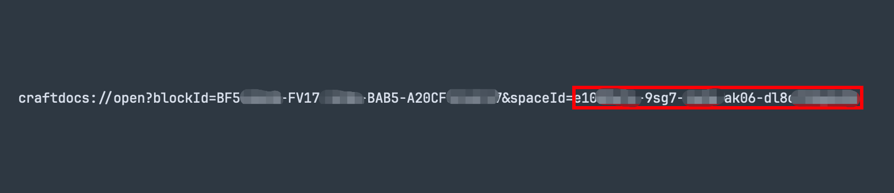
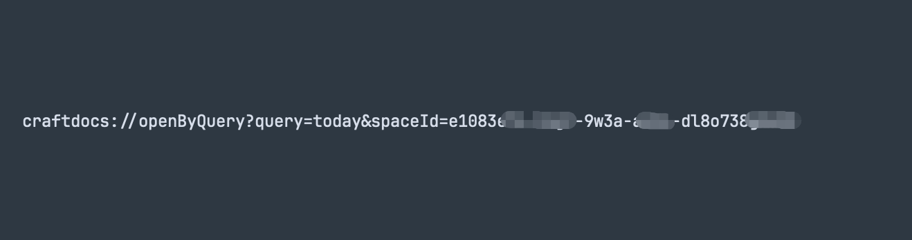
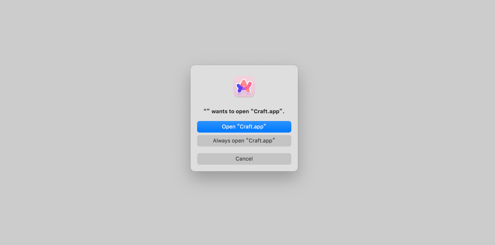
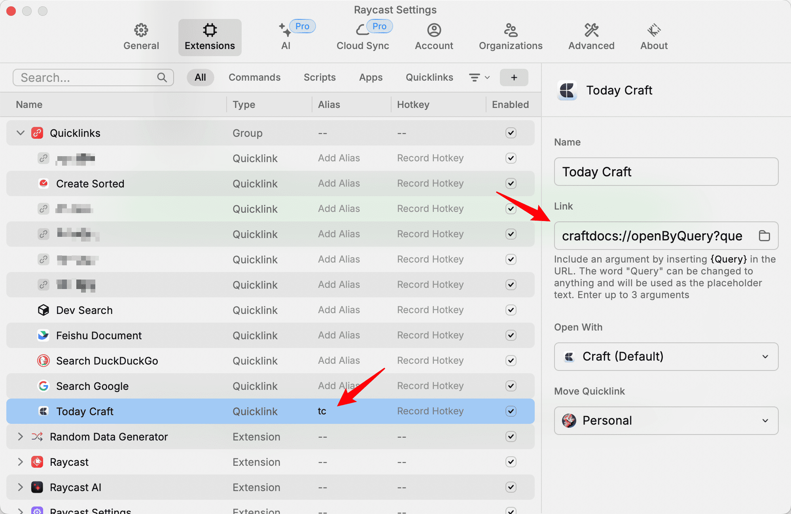

利用 URL Scheme 快速打开 Craft Daily Note
在 Craft Help Center 可以查看 Craft 支持的所有 URL Scheme 方案。本文只分享其中「Access to Daily Notes」相关的内容。
Access to Daily Notes
- Yesterday - craftdocs://openByQuery?query=yesterday&spaceId=
- Today - craftdocs://openByQuery?query=today&spaceId=
- Tomorrow - craftdocs://openByQuery?query=tomorrow&spaceId=
以上是 Craft 提供的支持快速打开 Craft Daily Note 的 URL Scheme，3 个 URL Scheme 的区别仅仅在于打开的 Daily Note 是昨天、今天还是明天。
配置 URL Scheme 参数
所有 URL Scheme 都需要提供一个 spaceId 参数，这个参数可以在 Craft 中任意一篇文档的 Deeplink 中获得。关于 Craft Deeplink 的介绍可以在 Craft Help Center 查看。
获取 Deeplink 路径/方法：
- 打卡任意一篇文档
- 点击「Share」
- 点击「Export as」
- 点击「Advanced」
- 点击「Copy Deeplink」
将复制到的 Deeplink 粘贴到某个文本编辑器，可以看到如下内容，其中 spaceId= 后面的内容就是我们需要的 spaceId 参数。
⚠️ 注意：是 spaceId= 之后的内容，不包括 spaceId= 这几个字符。

以打开 Today Daily Note 为例，使用上面获取到的 Deeplink 中的 spaceId 替换 Craft 提供的 URL Scheme 中的 <spaceId> ，结果如下：
⚠️ 注意：是将 <spaceId> 完整替换掉，包括 < 、> 这样的字符。

这就是一段完整的、可用的 URL Scheme，现在只需要访问该 URL（就像访问 https://www.rokcso.com 一样）就能直接打开 Craft Today Daily Note。比如直接在浏览器地址栏输入该 URL 然后回车。

快速访问 URL
为了让访问该 URL 这个动作更便捷，我使用 Raycast 的 Quicklinks 功能，配置一个名为「Today Craft」的 Quicklink 来快捷访问该 URL，并给该 Quicklink 配置了一个别名（Alias）。

最终效果：不论在任何 App、任何窗口、任何页面中，只需唤起 Raycast 然后输入「tc」，点击回车，即可直达 Craft Today Daily Note。
注：如果给 Today Craft 这个 Quicklink 配置一个快捷键，那么不论在任何 App、任何窗口、任何页面中，只需要按下该快捷键，即可直达 Craft Today Daily Note。